<div class="side-navbar">
  <div class="main-icons">
    <fa-icon class="active-link" id="btn1"onclick="change('1')"
      [routerLink]="['/dashboard']"
      routerLinkActive="active-link"
      [icon]="faHome"
      style="color: #4363bc"
    ></fa-icon>

    <fa-icon id="btn2"onclick="change('2')"
      [routerLink]="['/balance-preview']"
      routerLinkActive="active-link"
      [icon]="faClipboardList"
    ></fa-icon>

    <fa-icon id="btn3" onclick="change('3')"
      [routerLink]="['/financial-experts']"
      routerLinkActive="active-link"
      [icon]="faWallet"
    >
    </fa-icon>

    <fa-icon id="btn4" onclick="change('4')"
    [routerLink]="['/learning']" [icon]="faChartLine"></fa-icon>
    <fa-icon
      routerLinkActive="active-link"
      [icon]="faPlus"
      (click)="onClickToogleMore()"
    ></fa-icon>

    <div *ngIf="isLearnMoreToggled" class="learn-more-container">
      <h2>You can contact our partners and learn more about financies!</h2>
      <div class="logos_wrapper">
        
        
      </div>
    </div>
  </div>
</div>
